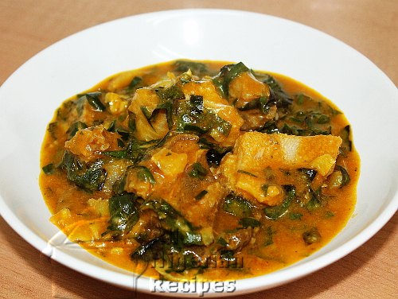

Oha

Description
Ora (Oha) soup is native to the South Eastern Nigeria.
It is a very traditional soup similar to the
bitterleaf soup but cooked with Ora leaves.
Ora (Oha) Soup is special because the tender ora leaves
used in preparing this soup recipe are seasonal unlike
their bitterleaf counterpart which can be found all year round.
Ingredients
- Oha leaf
- cocoyam paste
- ogiri
- azu
- meat
Steps
- Start by boiling your meats,
start with the tougher meats
like Cow leg and Shaki first.
- While the meats are boiling,
boil the Cocoyam with the skin on.
Do not add salt, boil till tender,
this should take roughly
20 minutes on medium heat…
- When they are soft,
gently peel the skin off and pound
till smooth in a mortar.
Alternatively, chop them into
small chunks and purée in your
electric blender or food
processor till smooth,
then set aside